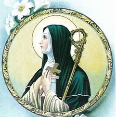
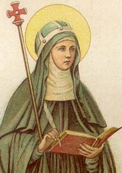
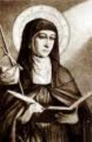
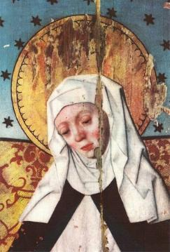

VIAGENS E ACONTECIMENTOS
Dons e Virtudes Especiais
Muitas vezes aconteceu que a BrÃgida
eram revelados os pensamentos mais secretos e as dúvidas mais ocultas 
Outras vezes, pessoas pediam as orações em benefÃcio das almas de parentes e amigos falecidos. E alguns queriam saber se os familiares estavam no Purgatório, ou onde estavam.
Ela recebia por escrito os nomes dos que partiram, e com a maior caridade e compaixão, orava a DEUS por eles. E então, em oração, obtinha a resposta Divina, informando onde aquelas almas estavam: se no Purgatório, no inferno ou no Céu. A Ela também foi dado conhecer, de forma clara e distinta, os modos de rezar e de interceder, assim como a maneira de ofertar esmolas, através das quais as almas poderiam ser auxiliadas e libertadas.
Boa prova disso foram experimentadas por aquelas pessoas mencionadas acima, que devotamente lhe perguntaram sobre as almas de seus parentes, e, tiveram as respostas por escrito. Na verdade, quando ela mesma, ou qualquer pessoa em casa, estivesse ansiosa ou em dúvida sobre qualquer coisa, suplicava o auxÃlio Divino, e sem grande demora, através de CRISTO, ou de NOSSA SENHORA, vinha uma resposta precisa e clara, explicando o que desejavam ou o que deveriam fazer.
Um dia, BrÃgida inspirada pelo ESPÃRITO SANTO, foi visitar um homem possesso do diabo. O cavalo em que estava acostumada a montar, que era um animal manso e tranquilo, de repente empinou, levantando as patas dianteiras do chão, podendo ser vistas as ferraduras nos cascos do animal. Como resultado, ela quase caiu ao solo. Em consequência, ficou com uma desagradável dor nas costas por longo tempo, e o fato em si a fez entender que o diabo queria interferir na conversão daquele pecador. Na verdade o homem que estava sendo visitado era um homem nobre, pelos padrões do mundo, e com grande poder econômico. O demônio para atrapalhar deixou o espÃrito dele raivoso e contrariado, especialmente na presença dela, quando se mostrou mais perturbado do que o habitual.
Com petulância aquele homem falou coisas horrÃveis contra DEUS, dizendo: "Ó, como são diferentes: o espÃrito que está em vós e o espÃrito que está em mim! Por causa da minha descrença e méritos ocultos, fui colocado nas mãos de um arrecadador cruel". Ela lhe respondeu: "Eu prometo que você será curado rapidamente, mas eu lhe pergunto: porque você fala abominações contra DEUS"? E o demônio que estava nele antecipou e disse: "Eu falo mesmo." Quando disse essa palavra, começou a falar, mais amargamente contra DEUS e a blasfemar, dizendo: "Aquele que criou o céu e a terra, eu adoro, sobre o seu novo CRISTO DEUS, eu não aceito!" A noiva de CRISTO rebateu rapidamente: "Fique em silêncio, miserável diabo, na sua blasfêmia contra DEUS. Mesmo estando a castigar esta criatura, você não será dono dela eternamente, porque o SENHOR não permitirá. Em nome de CRISTO, desapareça". Então, o homem ficou como se estivesse dormindo, e o demônio desapareceu. Depois de vários dias, ele estava perfeitamente curado.
Ao longo de sua existência a Santa recebeu do ESPÃRITO DE DEUS um sinal caracterÃstico: todas as vezes que era abordada por pessoas com o espÃrito diabólico ou que eram avessas ao cultivo da bondade e da caridade, ela sentia um cheiro de enxofre tão forte, que lhe colocava um gosto amargo na boca e que mal podia suportar. Numa ocasião, uma pessoa que procurava amizade com o Rei da Suécia aproximou-se dela para conversar: "O que a senhora disse sobre um determinado espÃrito? Era seu, de alguém ou de um demônio?" Ele perguntava sobre espÃritos que se apossavam das pessoas, no assunto que abordavam.
Ela que mal tinha forças para suportar o mau cheiro que exalava dele, respondeu: "Você tem um morador fétido, e também outras coisas fétidas saem da sua boca. Arrependei-vos, portanto, para que não caia sobre vós a vingança de DEUS!" O homem foi embora com muita raiva. Mas, quando se deitou para dormir, ouviu vozes dizendo-lhe: "Deixem-nos arrastar o sujeito sujo para os porcos, porque ele tem desprezado os avisos de salvação" . Voltando a si, refletiu sobre os fatos e compreendeu que o recado era para ele. Decidiu corrigir a sua vida, e logo desapareceu aquele terrÃvel odor que era percebido por BrÃgida, e que então, o acolheu fraternalmente dizendo-lhe que o seu espÃrito havia encontrado o caminho do SENHOR.
BrÃgida também tinha outra caracterÃstica especial: nos vinte e oito anos de sua existência dedicados essencialmente ao apostolado Divino, a partir do momento em que recebeu o ESPÃRITO DE DEUS, nunca mais fez qualquer viagem a outras cidades, nem se detinha em qualquer lugar, a não ser com a inspiração e a instrução do ESPÃRITO SANTO.
Viagem a Roma
Ela viajou a
Roma no ano de 1349 com o propósito de tomar parte na celebração do jubileu de
1350, e também, 
Na capital italiana, residiu primeiramente próximo a BasÃlica de São Lourenço. Foi testemunha do decaimento espiritual da cidade após a partida do Papa. Durante sua estadia na cidade, escreveu cartas ao Sumo PontÃfice, onde lhe suplicava que regressasse a Roma. Ela se dedicou especialmente a visitar as Igrejas que continham tumbas de Santos, a fim de alcançar graças para a conversão dos pecadores. Na Igreja de São Lourenço de Panisperna, na colina de Viminale, pediu aos transeuntes esmolas para os necessitados. Em seguida, piedosamente visitou as regiões mais pobres da cidade e prestou auxÃlio aos pobres com carinho e muito amor. Também, estando em Roma, aproveitou para viajar em peregrinação ao Santuário de Assis, à Nápoles e ao sul da Itália.
As profecias e revelações de Santa BrÃgida se referiam a questões de diversas naturezas, inclusive relativamente à administração eclesiástica. Previu por exemplo, que o Papa e o Imperador se reuniriam amistosamente em Roma. O fato logo ocorreu no ano 1368, no dia 21 de Outubro, quando o Papa Urbano V e Carlos IV se encontraram. Mas teve também visões e profecias que denunciavam a má conduta do Papa, as quais ela fazia questão de transmiti-las, e isto lhe causou inúmeras perseguições. Em uma ocasião chamou o Sumo PontÃfice de “assassino de almas, mais injusto que Pilatos e mais cruel que Judasâ€. BrÃgida foi expulsa de sua casa e teve que ir com sua filha pedir esmolas no Convento das Clarissa.
Mas nesta outra ocasião, estando em Roma, aguardava ansiosamente o PontÃfice, para poder lhe entregar as Regras de sua ordem. O Papa Urbano V recebendo toda a documentação prometeu examiná-las no menor tempo possÃvel. As Regras foram aceitas, mas os Bispos encarregados de estudá-las exigiram várias revisões e muitas mudanças no texto, com as quais BrÃgida não concordou, porque aquelas normas que estavam estabelecidas nas Regras, tinham sido ditadas por JESUS. E por outro lado, o Papa tomou a decisão de deixar novamente a Itália por motivos de segurança, situação com a qual BrÃgida também não estava de acordo. Ela profetizou que o Papa em face daquela decisão, receberia um forte golpe. E de fato aconteceu, dois meses após o seu regresso a Avignon, o Papa Urbano V faleceu.
A Santa e os Papas
No século XIV muitas pessoas, inclusive alguns Papas, sentiram que a Igreja tinha necessidade urgente de reforma. Se a Igreja não incorporava os ideais e valores do evangelho, a culpa foi colocada sobre os Papas, já que a eles tinha sido confiada a tarefa de vigiar e orientar os cristãos. Enquanto muitas pessoas achavam que pouco tinha sido realizado no campo da reforma, os Papas como pessoas (e não a instituição, a Igreja) rapidamente se tornaram objeto de todas as crÃticas. O próprio fato de que os Papas, que são denominados Bispos de Roma, estavam residindo em Avignon, na França, em face do Cisma, era uma afronta, e muitos cristãos sentiram, por isso mesmo, que o retorno do Papa a Roma era um pré-requisito insubstituÃvel para que pudesse ser realmente estabelecida qualquer reforma. Isto porque, os Papas pelo seu cargo e poder, eram os próprios árbitros da reforma, e assim, os reformadores tinham que ter a aprovação deles, para ganhar status oficial. Assim sendo, a única alternativa que restava para aqueles que queriam realizar reformas na Igreja, para melhorar a atuação do cristianismo, era tentar influenciar os Papas e incitá-los a voltar à Roma e entrar em ação. Um desses cristãos que lutou dedicadamente para alcançar este objetivo, foi Santa BrÃgida da Suécia. Ela recebia as revelações Divinas, de CRISTO e da VIRGEM MARIA, que lamentavam a situação da Igreja e condenavam um número impressionante de abusos e práticas deploráveis. Em várias revelações, os Papas também foram criticados. Um exemplo está no livro I, capitulo 41. Esta revelação é uma mensagem do CRIADOR direcionada ao Papa Clemente VI (1342-1352):
“Agora declaro Meu desgosto para contigo, cabeça de Minha Igreja, tu que te sentas em Minha Cátedra. Concedi este cargo a Pedro e a seus sucessores para que se sentassem com uma tripla dignidade e autoridade: primeiro, para que pudessem ter o poder de ligar e desligar as almas do pecado; segundo, para que pudessem abrir o Céu aos penitentes; terceiro, para que fechassem o Céu aos condenados e à queles que ME desprezam. Mas tu, que deverias estar absolvendo almas e ME as oferecendo, és realmente um assassino das Minhas almas. Designei Pedro como pastor e servo de Minhas ovelhas, mas tu as dispersas e as feres, tu és pior que Lúciferâ€.
Há também outra revelação, no livro VI capÃtulo 63, em que CRISTO condena o Papa Clemente por seus pecados e delitos e o exorta a fazer as necessárias reparações e a tomar medidas condizentes com a moral e o direito. Esta mensagem foi recebida por BrÃgida em 1348, e foi transmitida ao Papa em Avignon por dois amigos da Santa, o Bispo Hemming e Frei Pedro, o Prior do Convento.
BrÃgida foi para Roma no ano
jubilar, para nunca mais voltar a Suécia. Em suas revelações, ela pinta um
quadro muito sombrio das condições que lá existiam naquela época. No livro IV
capÃtulo 33, está uma carta que ela enviou 
Ao determos a julgar pelas manifestações da Santa, parece que ela coloca a culpa pela existência destas corrupções sobre o Papa Bonifácio VIII, cujo pontificado se mostrara tão desastroso a Igreja. Santa BrÃgida acredita que a raiz do problema está na ausência dos Papas de Roma (na mencionada revelação acima livro IV capÃtulo 33, ela termina dizendo que os padres estão como órfãos, sem pai, por causa da ausência do Papa). Nesta perspectiva, é natural que ela seja uma determinada defensora do retorno dos Papas a Roma, como é testemunhada por uma série de revelações.
Viagem a Terra Santa
Em 1371, com 68 anos de idade, após ter algumas visões sobrenaturais, empreendeu uma peregrinação a Terra Santa, acompanhada de sua filha Catarina e seus filhos Carlos e Bingério, e de outras pessoas conhecidas, com um itinerário passando por Nápoles e Chipre. Essa foi à última de suas viagens. A expedição começou mal, já que em Nápoles, Carlos se apaixonou pela Rainha Juana I, cuja reputação era muito duvidosa. A Rainha era casada e seu esposo vivia na Espanha, e por isso, sentindo-se livre e desimpedida, desejava se casar com Carlos. Santa BrÃgida não aprovou o relacionamento, e vivia atemorizada diante da possibilidade de ser realizado aquele casamento irregular, que levaria o seu filho a viver em pecado.
Intensificou as suas orações, clamando e suplicando a DEUS que não deixasse o seu filho viver no pecado. Em duas semanas Carlos contraiu uma gravÃssima enfermidade acompanhada de uma abominável febre maligna, que o matou, deixando-o sem vida nos braços de sua mãe. BrÃgida preocupada rezou e implorou a misericórdia do SENHOR pedindo-LHE que perdoasse a alma de seu filho. JESUS a fez compreender que ELE tinha perdoado o rapaz e que ele estava no Purgatório pagando a sua dÃvida com a Justiça Divina.
A Santa seguiu viagem e visitou todos os Lugares Santos em Jerusalém, Belém, Nazaré, Cafarnaum e outros.
Na viagem que fez a Terra Santa, depois de
visitar todos os Santuários, começou a sentir um enfraquecimento em 
Sendo informada de que sua filha Ingeborg morreu, ela que era religiosa no Mosteiro de Risabergh, alegrou-se e disse: “Ó, meu SENHOR JESUS CRISTO! Amor de minha vida! Bendito seja, porque a chamaste antes que o mundo a agarrasse em seus braçosâ€.
Quando voltou à Roma de sua viagem ao Oriente Médio, no verão de 1373, já enfrentava a enfermidade que a debilitou, e continuou atuando em seu corpo deixando-a com a saúde muito mal.
Cinco dias antes da sua morte, NOSSO SENHOR JESUS CRISTO lhe apareceu diante do altar, que existia em seus aposentos. ELE se mostrou alegre e LHE disse: "EU fiz com você o que um noivo normalmente faz, se esconde de sua noiva alguns dias, para que ELE possa ser mais ardentemente desejado. Assim EU não lhe visitei levando consolações durante esse tempo; pois era a hora do seu teste. Portanto, agora que você foi testada, e pacientemente suportou, vá em frente e prepare-se, pois agora é o momento em que, como EU lhe tinha prometido, você será vestida e consagrada como uma freira. E, doravante, você deve ser contada, não só como Minha noiva, mas também como uma freira e uma mãe em Vadstena".
Na verdade, durante a sua vida, Santa BrÃgida, nunca chegou a se consagrar num Mosteiro, fazendo os votos e tornando-se uma freira. Mas o SENHOR lhe propiciou esta graça, espiritualmente, nos seus últimos dias de vida.
Morte de BrÃgida
Antes dela morrer, JESUS mandou que entregasse os escritos a D. Alfonso Pecha de Vadaterra, ermitão espanhol, que tinha sido bispo Giennense, e deste modo, foram impressos os livros com as celestiais revelações.
BrÃgida faleceu no dia 23 de Julho, numa residência ao lado da atual praça Farnese. Quando ela percebeu que estava prestes a sair de seu corpo e viu os seus filhos aflitos, disse: "Por que a tristeza? O meu tempo de vida foi suficientemente longo. Devemos regozijar porque agora sou chamada para um SENHOR mais poderosoâ€. E, tendo chamado os seus filhos, abençoou a todos e adormeceu no SENHOR. De acordo com sua vontade, seus restos mortais foram transladados para a Suécia, especificamente para o Convento de Vadstena, após ter sido sepultada na Igreja romana de São Lourenço em Panisperna. O seu filho Bingério se incumbiu de todas as providências para o translado de sua mãe para a Suécia. Em 1377, por ordem do Bispo Alfonso Pecha de Vadaterra, amigo e confessor de BrÃgida na Itália, foi lançada a primeira edição de suas "Aparições celestiais". Em 1378, finalmente foi aprovada as Regras da Ordem Religiosa fundada por ela, e em 1384, o Convento de Vadstena foi consagrado.
A Ordem Brigidina, como também é conhecida, não tem monges, somente mulheres. Há doze conventos no mundo, sendo que a Abadia Syon em Devonshire é a única casa religiosa na Inglaterra. As Irmãs rezam suplicando a DEUS pela restauração da casa mãe em Vadstena na Suécia, onde iniciou a fundação da Congregação, depois da morte de Santa BrÃgida, mas tendo sua filha, Santa Catarina da Suécia, como a primeira Abadessa. As Brigidinas cultivam uma especial devoção a NOSSA SENHORA e à Paixão de CRISTO, em decorrência das visões que sua fundadora teve na infância e durante a sua vida.
O processo de canonização começou em 1377 e terminou em 7 de Outubro de 1391, quando ela foi proclamada Santa pelo Papa Bonifácio IX. É padroeira da Suécia e em 1999, Santa BrÃgida foi elevada, junto com Santa Catarina de Sena e Santa Teresa Benedita da Cruz, padroeiras e protetoras da Europa.
A Ordem fundada por Santa BrÃgida perdura até os nossos dias, sob o nome de ORDEM DO SANTÃSSIMO SALVADOR (Ordo Sancti Salvatoris), chamada comumente de “Ordem Brigidinaâ€. Ela se espalhou rapidamente por toda a Europa com Mosteiros na Escandinávia, na Itália e em outros paÃses. Nos tempos modernos expandiu-se em cinco diferentes ramos, juridicamente independentes: na Espanha em 1629, na Itália no ano 1911, nos E.U.A. no ano 1970, no México ano 2000. Nenhumas dessas fundações são de homens, todas elas são de mulheres (exceto nos E.U.A. que tem um Convento masculino). Sua festa é celebrada no dia 23 de julho.
Os restos da Santa se encontram no Convento de Vadstena, na Suécia. O edifÃcio onde a Santa viveu em Roma, foi tratado e reformado e se transformou na Casa de Santa BrÃgida. Nela estão um Templo, um Convento, e um albergue para pobres.